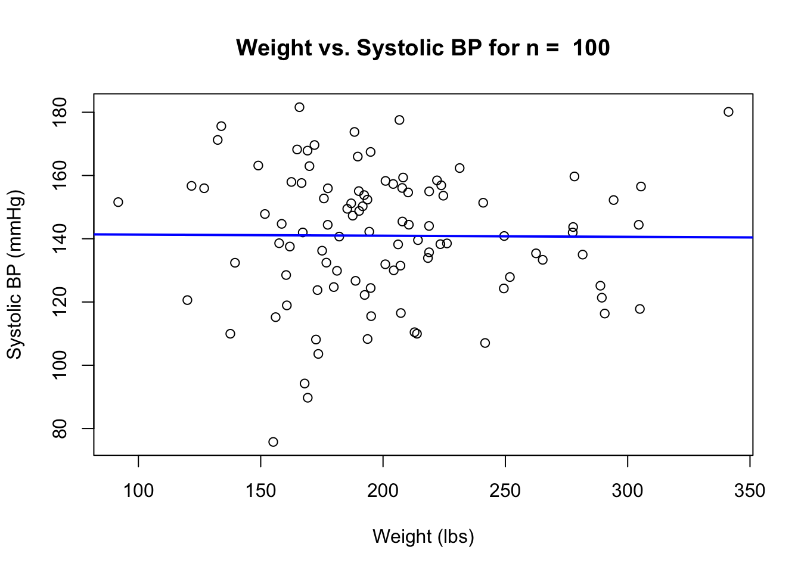
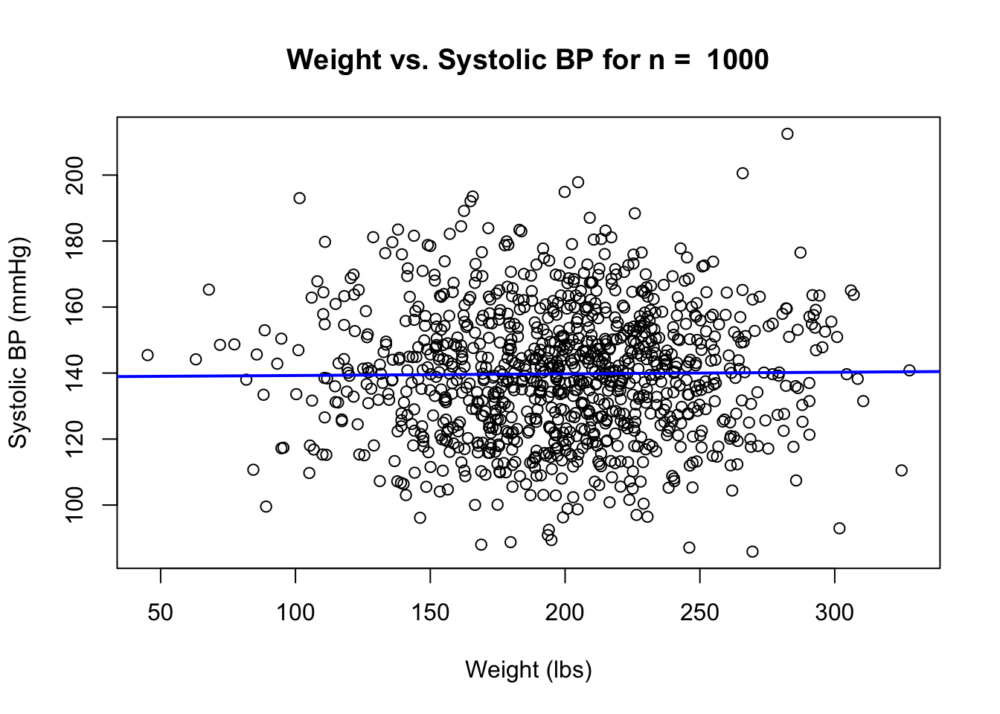
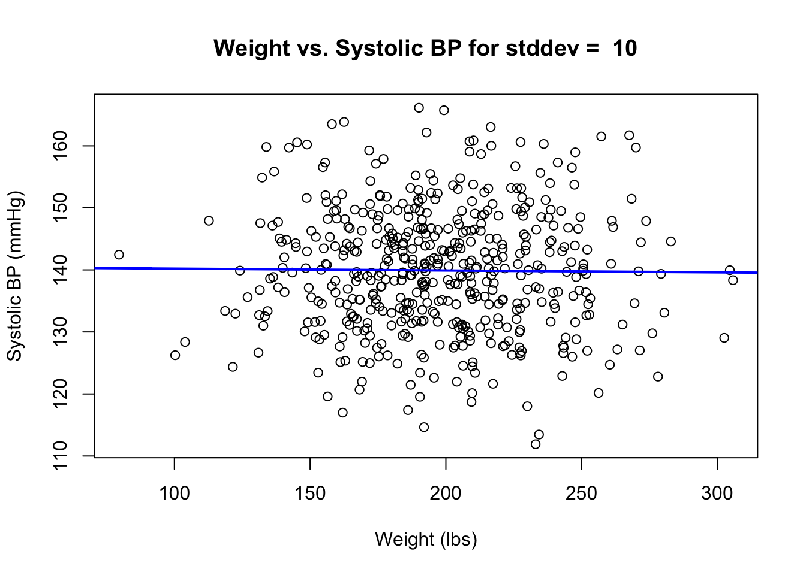
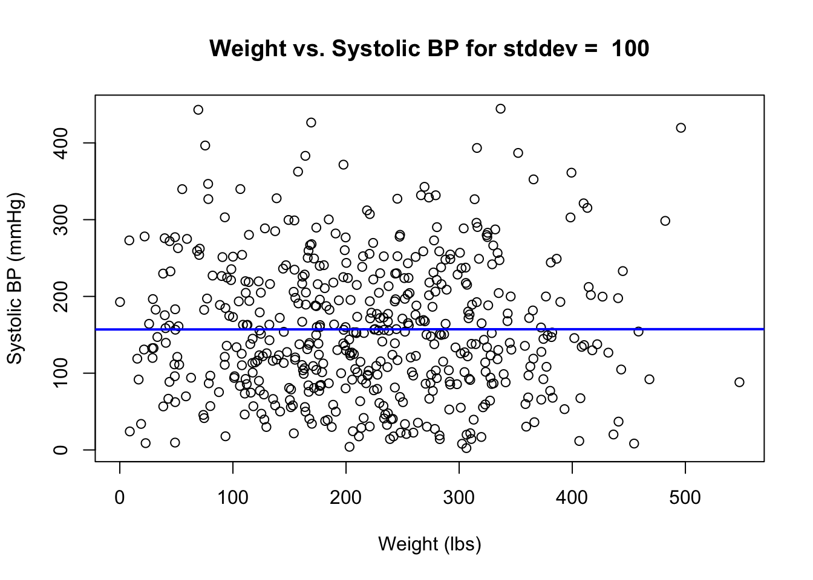
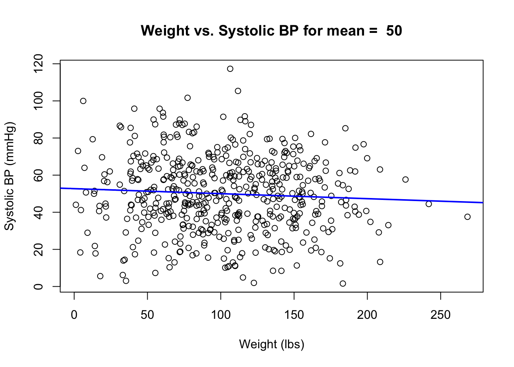
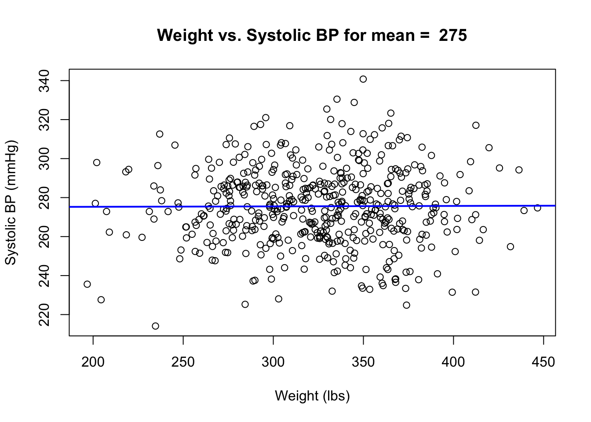
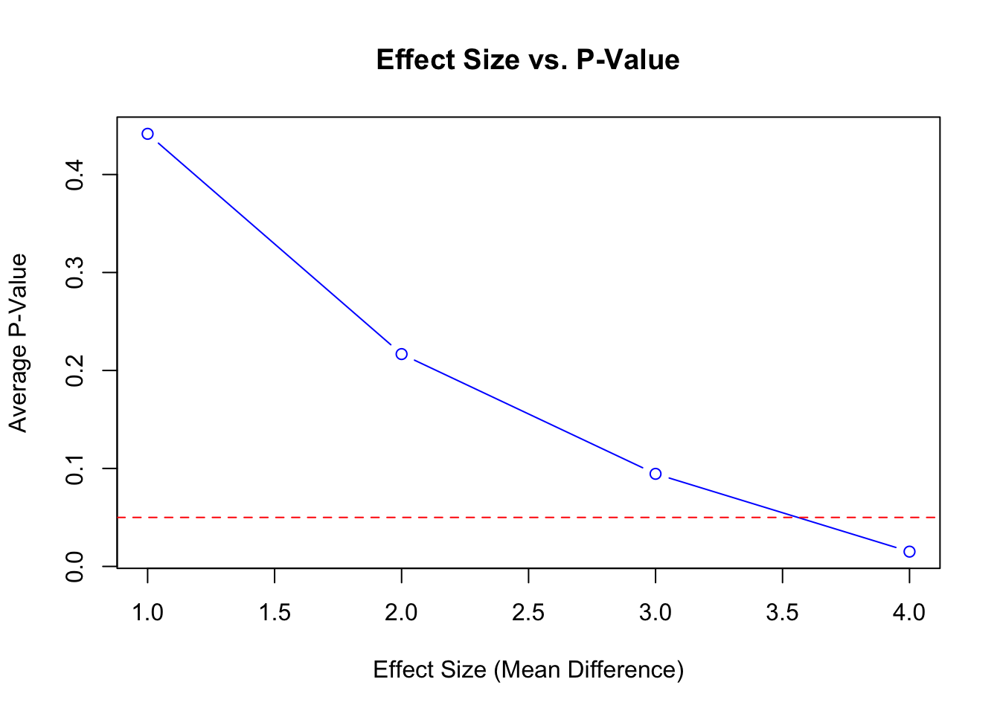
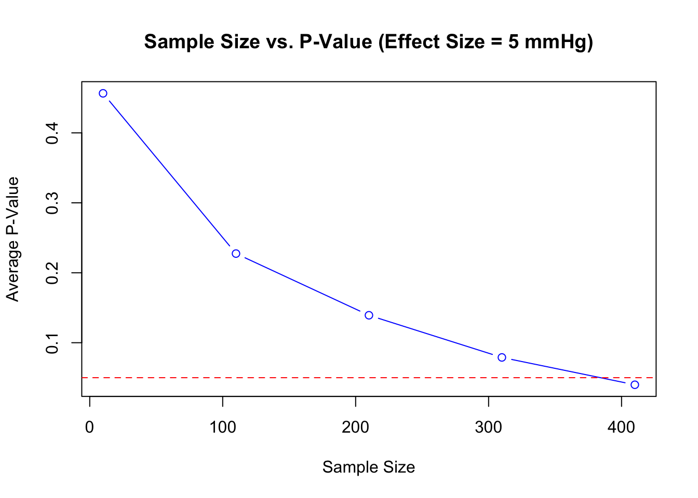

Solutions for homework 6 on using for loops and creating random data sets.
Data to model: weight variable: n = 490, mean = 202, std dev = 45.7, min = 106, max = 369 systolic blood pressure variable: n = 496, mean = 140, std dev = 20, min = 87, max = 214
library(truncnorm)
# Fit linear function from class for linear regression
fit_linear2 <- function(p=NULL, x_cols=NULL, y_cols=NULL, count = NULL, title = "Weight vs. Systolic BP") {
# Extract data from data frame
x_data <- p[, x_cols] # All the rows in column x_cols
y_data <- p[, y_cols] # All the rows in column y_cols
# Fit the model with y as a function of x
my_mod <- lm(y_data ~ x_data)
# Extract slope and intercept
slope <- summary(my_mod)$coefficients[2, 1]
intercept <- summary(my_mod)$coefficients[1, 1]
pvalue <- summary(my_mod)$coefficients[2, 4]
# Format output as slope and p value
my_out <- data.frame(slope=slope, pvalue=pvalue)
# Plot output
if (count == 1 | count == 10) {
plot(x=x_data, y=y_data, xlab="Weight (lbs)", ylab="Systolic BP (mmHg)", main=title)
# Add regression line
abline(a=intercept, b=slope, col="blue", lwd=2)
}
return(my_out)
}
##################################################
# Adjusting parameters function
adjusting_parameters <- function(n = 500, mean = 100, stddev = 50) {
return(rtruncnorm(n, a=0, mean=mean, sd=stddev))
}# Initialize data frame for varied sample sizes
results_sample_size <- data.frame(mean = numeric(), slope = numeric(), pvalue = numeric())
count <- 1
# Adjusting sample size
for (n in seq(100, 1000, by=100)) {
weight <- adjusting_parameters(n, 202, 45.7)
sys_bp <- adjusting_parameters(n, 140, 20)
data <- data.frame(weight, sys_bp)
# Run analysis
title = paste("Weight vs. Systolic BP for n = ", n)
output <- fit_linear2(data, x_cols=1, y_cols=2, count, title)
slope <- output[1]
pvalue <- output[2]
results_sample_size <- rbind(results_sample_size, data.frame(sample_size = n, slope = slope, pvalue = pvalue))
count <- count + 1
}
# Print results
print(results_sample_size)## sample_size slope pvalue
## 1 100 -0.003658249 0.93478117
## 2 200 0.033748464 0.22873886
## 3 300 0.041783030 0.07136253
## 4 400 0.016888277 0.45231726
## 5 500 -0.017907851 0.33923028
## 6 600 0.001770140 0.92633642
## 7 700 -0.016350182 0.32055623
## 8 800 0.006737795 0.67123612
## 9 900 0.010674017 0.45294415
## 10 1000 0.005035165 0.71896729The p values appear to be smaller/more significant for smaller sample sizes, but the random element for each data set makes it difficult to tell.
# Initialize data frame for varied std dev
results_stddev <- data.frame(mean = numeric(), slope = numeric(), pvalue = numeric())
count <- 1
# Adjusting stddev
for (stddev in seq(10, 100, by=10)) {
weight <- adjusting_parameters(500, 202, stddev+25)
sys_bp <- adjusting_parameters(500, 140, stddev)
data <- data.frame(weight, sys_bp)
# Run analysis
title = paste("Weight vs. Systolic BP for stddev = ", stddev)
output <- fit_linear2(data, x_cols=1, y_cols=2, count, title)
slope <- output[1]
pvalue <- output[2]
results_stddev <- rbind(results_stddev, data.frame(stddev = stddev, slope = slope, pvalue = pvalue))
count <- count + 1
}
# Print results
print(results_stddev)## stddev slope pvalue
## 1 10 -0.0030788495 0.8038774
## 2 20 0.0381084946 0.0296260
## 3 30 0.0137204493 0.5647708
## 4 40 0.0184650809 0.5228126
## 5 50 0.0196640404 0.5015919
## 6 60 0.0050520413 0.8691034
## 7 70 -0.0075804459 0.8149324
## 8 80 0.0154702663 0.6526994
## 9 90 -0.0242096448 0.4572930
## 10 100 0.0009098206 0.9806181The p values do not appear to be smaller/more significant when varying the standard deviation. However, this could be due to the randomness in generating the data sets.
# Initialize data frame for varied mean
results_mean <- data.frame(mean = numeric(), slope = numeric(), pvalue = numeric())
count <- 1
# Adjusting mean
for (mean_value in seq(50, 275, by=25)) {
weight <- adjusting_parameters(500, mean_value+50, 45.7)
sys_bp <- adjusting_parameters(500, mean_value, 20)
data <- data.frame(weight, sys_bp)
# Run analysis
title = paste("Weight vs. Systolic BP for mean = ", mean_value)
output <- fit_linear2(data, x_cols=1, y_cols=2, count, title)
slope <- output[1]
pvalue <- output[2]
results_mean <- rbind(results_mean, data.frame(mean = mean_value, slope = slope, pvalue = pvalue))
count <- count + 1
}
# Print results
print(results_mean)## mean slope pvalue
## 1 50 -0.027148759 0.16142300
## 2 75 0.021912278 0.27270454
## 3 100 0.016629200 0.39896158
## 4 125 0.008202668 0.65835939
## 5 150 0.045934760 0.01858788
## 6 175 0.004623866 0.81801643
## 7 200 0.028226401 0.14778697
## 8 225 0.018577620 0.34072443
## 9 250 0.037907786 0.06571000
## 10 275 0.002262108 0.90961054The p values appear to be smaller/more significant for smaller means. However, this could be due to the randomness in generating the data sets.
# Initialize data frame for mean and pvalue
results_effect_size <- data.frame(mean_diff = numeric(), avg_pvalue = numeric())
for (mean_diff in seq(1, 20, by=1)) { # Test effect sizes from 1 to 20 mmHg
pvalues <- numeric() # Initialize storage for p values
for (i in 1:100) { # Run each effect size 100 times to account for random variation
weight <- adjusting_parameters(500, 202, 45.7)
sys_bp_original <- adjusting_parameters(500, 140, 20) # Control sys bp
sys_bp_altered <- adjusting_parameters(500, 140 + mean_diff, 20) # Adjusted sys bp
# Combine data frames holding weight, sys_bp
data_original <- data.frame(weight = weight, sys_bp = sys_bp_original, group = "Original")
data_altered <- data.frame(weight = weight, sys_bp = sys_bp_altered, group = "Altered")
data_combined <- rbind(data_original, data_altered)
# Run ANOVA test on sys_bp based on original and altered sys_bp
anova_result <- aov(sys_bp ~ group, data=data_combined)
pvalues[i] <- summary(anova_result)[[1]][["Pr(>F)"]][1] # Notation to get p value
}
# Get average p-value across 100 runs
avg_pvalue <- mean(pvalues)
# Store results
results_effect_size <- rbind(results_effect_size, data.frame(mean_diff = mean_diff, avg_pvalue = avg_pvalue))
# Exit loop if significant result is reached
if (avg_pvalue <= 0.05) {
# Print smallest effect size
print(paste("Smallest effect size for significant pattern:", mean_diff))
break
}
}## [1] "Smallest effect size for significant pattern: 4"print(results_effect_size)## mean_diff avg_pvalue
## 1 1 0.44155342
## 2 2 0.21673381
## 3 3 0.09449537
## 4 4 0.01509250# Plot showing smallest effect size with significance threshold
plot(results_effect_size$mean_diff, results_effect_size$avg_pvalue, type="b", col="blue", xlab="Effect Size (Mean Difference)", ylab="Average P-Value", main="Effect Size vs. P-Value")
# Add significance threshold
abline(h=0.05, col="red", lty=2)
# Initialize data frame for sample size and pvalue
results_sample_size <- data.frame(sample_size = numeric(), avg_pvalue = numeric())
# Minimum effect size from above = 4
mean_diff <- 4
# Vary the sample size (from 100 to 1000, in steps of 100)
for (sample_size in seq(10, 1000, by=100)) {
pvalues <- numeric() # Store p-values for multiple runs
for (i in 1:100) { # Run 100 simulations for each sample size
weight <- adjusting_parameters(sample_size, 202, 45.7)
sys_bp_original <- adjusting_parameters(sample_size, 140, 20)
sys_bp_altered <- adjusting_parameters(sample_size, 140 + mean_diff, 20)
# Combine data frames holding weight, sys_bp
data_original <- data.frame(weight = weight, sys_bp = sys_bp_original, group = "Original")
data_altered <- data.frame(weight = weight, sys_bp = sys_bp_altered, group = "Altered")
data_combined <- rbind(data_original, data_altered)
# Run ANOVA test on sys_bp based on original and altered sys_bp
anova_result <- aov(sys_bp ~ group, data=data_combined)
pvalues[i] <- summary(anova_result)[[1]][["Pr(>F)"]][1] # Notation to get p value
}
# Get average p-value across 100 runs
avg_pvalue <- mean(pvalues)
# Store results
results_sample_size <- rbind(results_sample_size, data.frame(sample_size = sample_size, avg_pvalue = avg_pvalue))
# Exit loop if significant result is reached
if (avg_pvalue <= 0.05) {
# Print smallest effect size
print(paste("Minimum sample size for significant pattern:", sample_size))
break
}
}## [1] "Minimum sample size for significant pattern: 410"print(results_sample_size)## sample_size avg_pvalue
## 1 10 0.45654747
## 2 110 0.22744709
## 3 210 0.13925100
## 4 310 0.07895849
## 5 410 0.03990058# Plot showing smallest sample size for significant result
plot(results_sample_size$sample_size, results_sample_size$avg_pvalue, type="b", col="blue", xlab="Sample Size", ylab="Average P-Value", main="Sample Size vs. P-Value (Effect Size = 5 mmHg)")
# Add significance threshold
abline(h=0.05, col="red", lty=2)